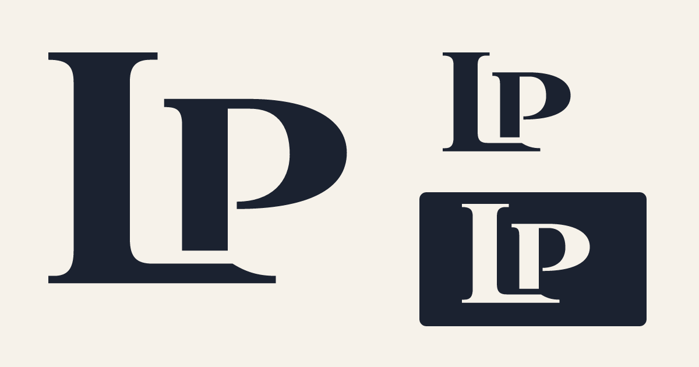
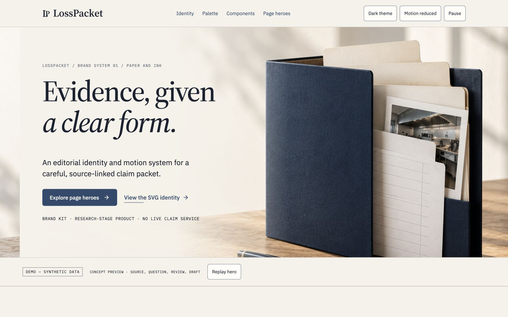
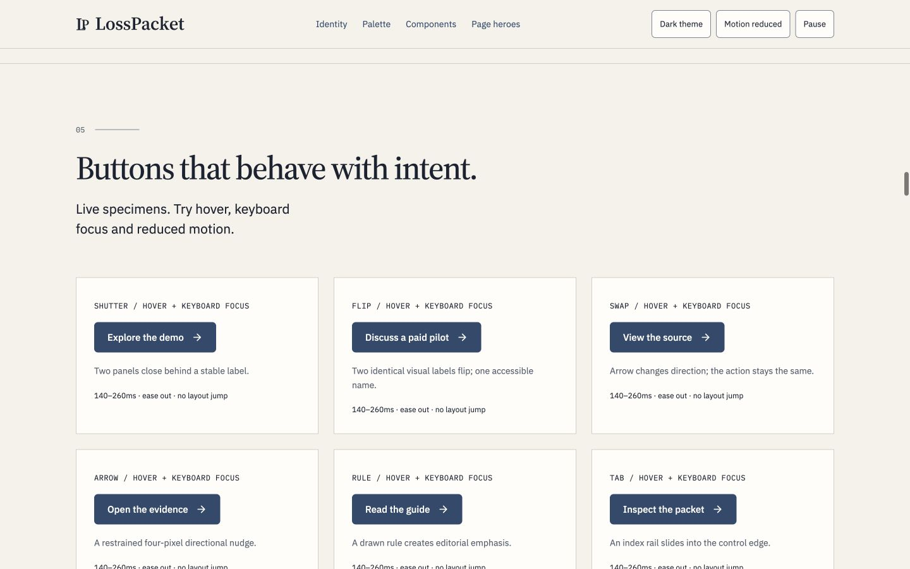

14 October 2026 · Local assets and browser review.
This record covers the brand kit, not a deployed website or operating product. It documents representative visual inspection and concrete asset, color, route and interaction checks.
| Check | Observed result |
|---|---|
| Desktop 1440 × 900 | No page-level horizontal overflow; typography, controls and SVG identity inspected. |
| Tablet 834 × 1194 | No page-level horizontal overflow; policy-question hero and readable summary inspected. |
| Mobile 390 × 844 | No page-level horizontal overflow after fixing diagram grid min-width. Diagrams scroll within their own panel; key source facts are repeated in readable text. |
| All 33 route studies | Each selected through the live selector; heading, SVG, DEMO disclosure and summary verified. |
| Keyboard focus | Tab/Shift+Tab reached controls; visible outline confirmed. Focused flip label reached translateY(-20px). |
| Pause and resume | Pause toggled the root state and computed animation-play-state to paused; Resume restored it. |
| Reduced motion | Manual control removed nonessential animations and preserved complete content. CSS also respects the operating-system media query; OS preference itself was not changed for this check. |
| Dark theme | Toggle changed body to ink-night with cream text and reverse SVG logo; measured semantic pairs passed. |
| Local fonts | Source Serif 4, IBM Plex Sans and IBM Plex Mono loaded; browser font checks returned true. |
| Runtime logs | No console errors or warnings observed in the reviewed browser session. |
| Social/footer state | Icons render as specimens; no invented LinkedIn/Crunchbase company destinations. |
| Small-size exports | Actual 16/32/48/64/96/180/192/512 PNG dimensions and multi-size ICO verified. The small optical artwork is separate from the display symbol. |
| Check | Result | Evidence |
|---|---|---|
| All SVG files parse | Pass | 130 files |
| Logo masters contain paths and no embedded raster/text dependency | Pass | 17 SVG masters including optical mark |
| Favicon 16px dimensions | Pass | |
| Favicon 32px dimensions | Pass | |
| Favicon 48px dimensions | Pass | |
| Favicon 64px dimensions | Pass | |
| Favicon 96px dimensions | Pass | |
| Favicon 180px dimensions | Pass | |
| Favicon 192px dimensions | Pass | |
| Favicon 512px dimensions | Pass | |
| ICO contains expected sizes | Pass | |
| 33 distinct IA routes | Pass | |
| Each hero has an SVG, background image and texture | Pass | |
| Each hero discloses synthetic preview | Pass | |
| Every hero contains reduced-motion handling | Pass | |
| All 22 measured color pairs pass | Pass | |
| Three font family licenses present | Pass | |
| Lucide and social artwork license documents present | Pass | |
| Local HTML links and images resolve | Pass | [] |
| Canonical synthetic amount labels in worksheet | Pass | |
| No outbound product actions, telemetry or credential submission | Pass |
The joined LP now uses bespoke paths matching the selected reference, replacing the earlier overlapping type glyphs. All variants and favicon exports were regenerated. Earlier browser captures below retain the previous logo; this image documents the corrected identity.

Desktop and mobile captures are actual browser renders of the kit. They are not AI-generated screenshots.


The 33 hero selector states were checked for content and rendering; they were not each subjected to a separate full visual audit. The brand-kit forms are specimens and submit nothing. A future implementation still needs product-flow QA, operator-approved notices, real profile destinations and the brief’s pilot/licensing/data-handling gates. No blanket accessibility or legal clearance is claimed.